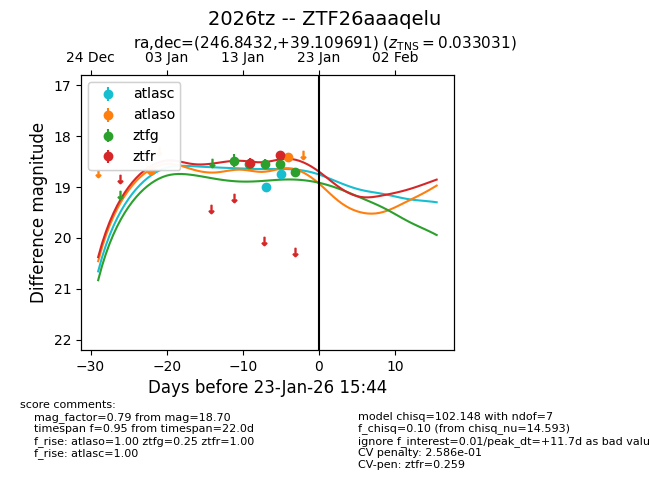
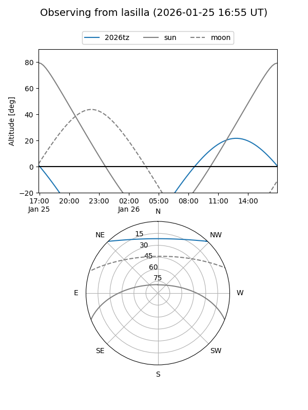
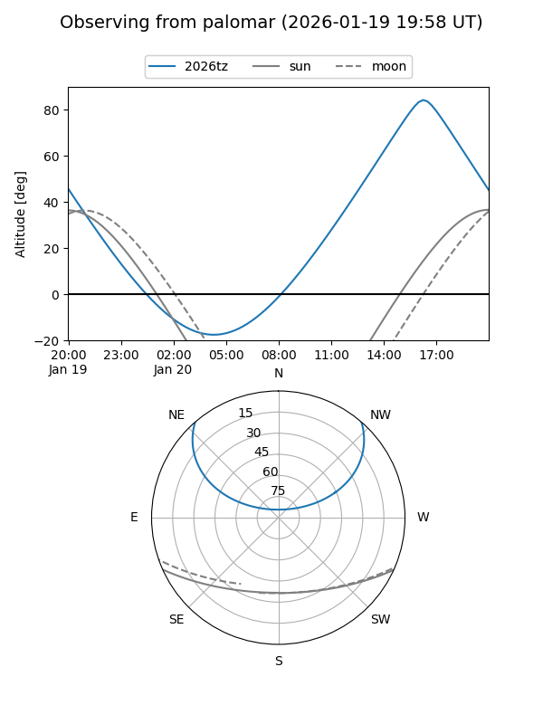
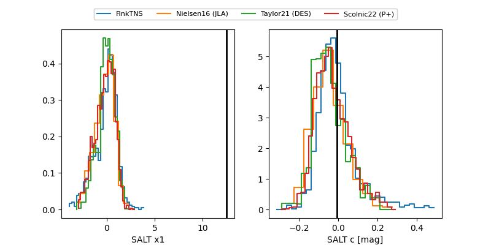

2026tz
Target 2026tz at 2026-01-17 20:02
Aliases and brokers:
FINK: link
Lasair: link
ALeRCE: link
TNS: link
YSE: link
alt names
ZTF26aaaqelu (ztf,fink_ztf)
2026tz (tns,yse)
Coordinates:
equatorial (ra, dec) = 246.8432,+39.10969
equatorial (HMS+DMS) = 16:27:22.38,+39:06:34.89
galactic (l, b) = (62.3123,+43.92428)
Flags:
Photometry:
last atlaso=18.66, ztfg=18.54, ztfr=18.53
1 atlaso, 3 ztfg, 1 ztfr detections
Lightcurve

Visibility


Additional plots
